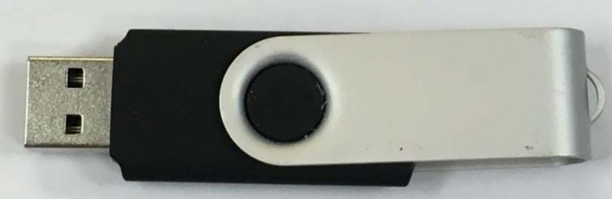

Doc no. MOC-TSB-16-09 // Vol. 16 No. 09 // May 19, 2016 // Brake
Required Thumb Drives for Programming and Upgrading the Smart Tech Machines
The MOC Smart Tech® machines (Transmission, Brake, and Engine Flush) have controller boards that are programmed using a specific program on a thumb drive. These programs can be updated in the field by plugging the thumb drive into the controller board. In order for the controller board to read the program, a specific type of thumb drive (Part No. 71247) is required.
What's new
Controller Boards available:
Recommendation: the MOC Machine and Equipment Department recommends that all partners and distributors keep a minimum of 1 of these thumb drives in stock for servicing the Smart Tech® machines and controller boards, as needed. The new or updated program can be sent by email and transferred to thumb drive for a quick update. A controller board programmed for a certain machine may be reprogrammed for another machine if needed (special procedure required).
Contact
For more information, contact the Machine & Equipment Department at 866.244.6621.

Part numbers
| Part No. | Description | Notes |
|---|---|---|
| 95851 | Smart Tech® II ATF Controller board | |
| 98234 | Smart Tech® Brake Controller board | |
| 96531 | Smart Tech® Engine Flush Controller board | |
| 71247 | Thumb Drive |